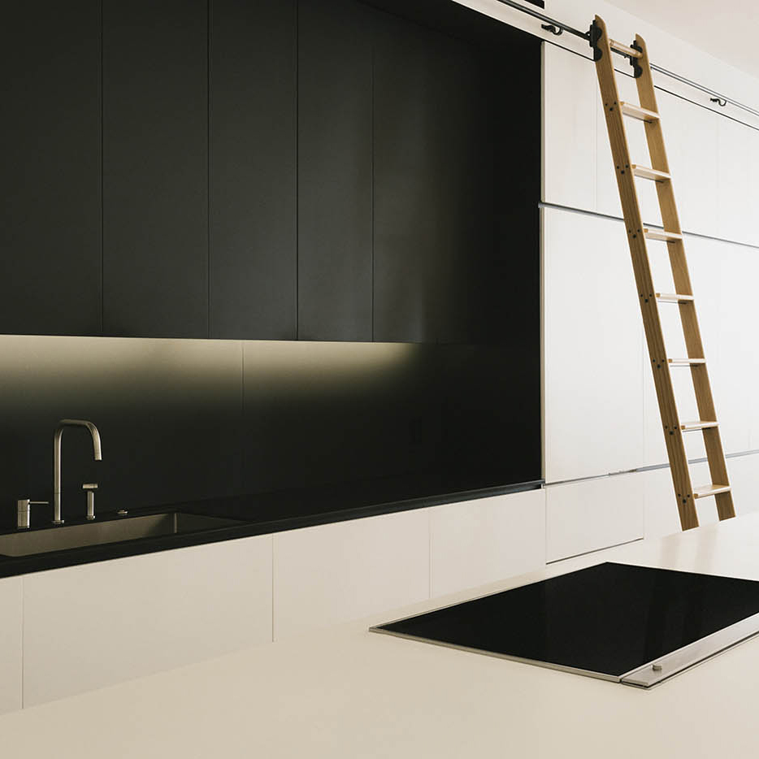
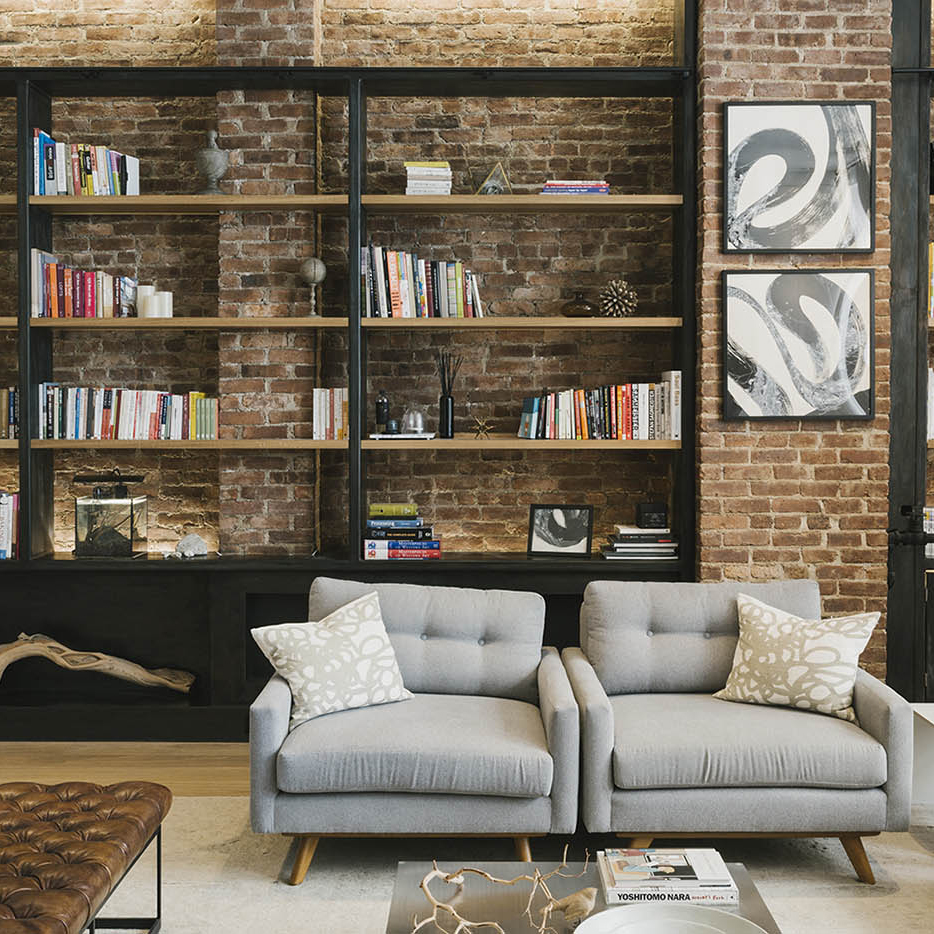
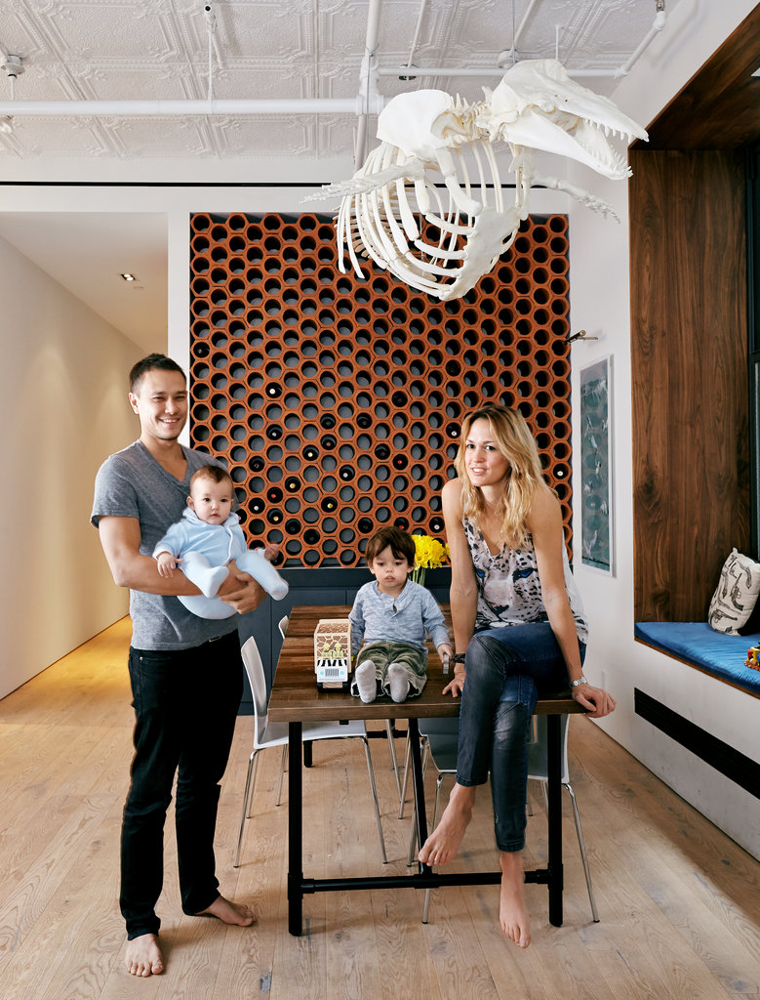

Raad specializes in creating objects and spaces that emphasize the process of construction — knowledge gleaned from close and continued collaboration with builders. This collaboration leads to clean, rich, imaginative designs that marry strikingly innovative thinking about function with a deep respect for the traditions of everyday living. A focus on the materiality, joinery and detail of design is apparent in all of raad’s work and is always considered within the context of the relationship between open space and cozy enclosure.
Featured

White Street

Greenwich Village Loft

Tribeca Loft
news
